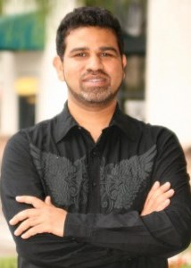

Keynote
Monday October 19, 2020

Dr. Haroon Stephen,
Department of Civil and Environmental Engineering and Construction
University of Nevada, Las Vegas
Challenges and Opportunities in Remote and In-situ
Sensing: A Data and Software Perspective
Abstract:
Data generated by remote and in-situ sensing has entered
the big data realm and is an opportunity to unravel
complex processes of earth and human systems. This talk
provides the emerging challenges and opportunities in
remote and in-situ sensing with a specific attention to
overlaps with data engineering and software engineering.
The whole life cycle of sensing from sensor design,
deployment, and management to data harvesting, processing,
and analysis is supported by science and technology
rendered by data engineering and software engineering
disciplines. Data engineering provides the practical
infrastructure of data generation and collection and
software engineering provides architecture of data
processing and analysis. The talk will focus on recent
trends in remote and in-situ sensing disciplines and their
emerging challenges that would benefit from advances in
data engineering and software engineering.
Bio:
Dr. Haroon Stephen is Associate Professor in the
Department of Civil and Environmental Engineering at
the University of Nevada, Las Vegas. Dr. Haroon Stephen
is involved in interdisciplinary research of climate
change impact and hydrology with specific emphasis on
applications of remote sensing and geographic information
systems (GIS) and specific focus on safeguarding and
improving urban quality of life. He has substantial
experience in acquisition, processing, visualization,
archiving, and utilization of geospatial data. He has
been involved in several Federal and State sponsored
research projects involving research and applications of
geospatial data. In these projects, he has worked with
the Bureau of Land Management, Bureau of Reclamation,
US Forest Service, City of Las Vegas, Nevada Division of
Forestry, Nevada Division of Environmental Protection,
and Nevada Department of Transportation. He has
developed the Visualization Facility at UNLV that
provides state-of-the-art visualization of complex
datasets and processes for research and educational
needs of UNLV and the region. He also provides GIS and
Remote Sensing research and training support to UNLV
campus. He has participated in various competitive
research grants, including National Science Foundation
grants titled "The Solar Energy-Water-Environment
Nexus in Nevada", and "Collaborative Research: The
Western Consortium for Watershed Analysis, Visualization,
and Exploration." Currently, he is lead PI of a $2.5M
National Science Foundation project titled "Enhancing
Critical Transitions in Civil Engineering Degree". His
ongoing research interests include applications of remote
sensing and GIS technologies to water resource mapping;
transportation; and natural and urban climate study. Some
active projects include urban heat island mapping; urban
flood modeling; regional emission inventory development;
and environmental impacts of solar energy farms.